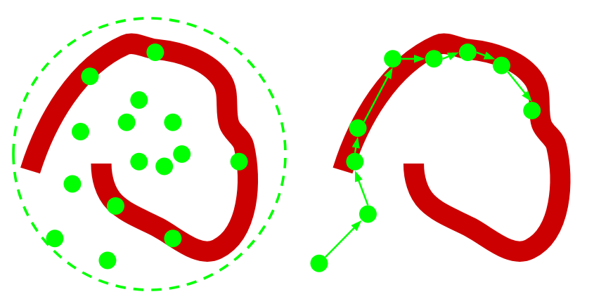

22. Introducción a Markov Chain Monte Carlo#
22.1. Resumen de la premisa Bayesiana#
En inferencia Bayesiana, la probabilidad de un evento representa el grado de conocimiento (o desconocimiento) que manejamos de dicho evento.
Matemáticamente, representamos el evento de interés con una variable aleatoria \(\theta\), y nuestro conocimiento actual del mismo, es decir su distribución a priori con \(p(\theta)\).
Luego, recolectamos datos \(\mathcal{D}\) y actualizamos lo que sabemos de \(\theta\) formando una distribución a posteriori \(p(\theta|\mathcal{D})\).
Lo anterior se obtiene aplicando el Teorema de Bayes:
donde también hicimos uso de la ley de probabilidad total para escribir la verosimilitud marginal \(p(\mathcal{D})\) en función de la verosimilitud y el prior.
Anteriormente, hemos visto modelos donde la expresión anterior tiene solución analítica (prior conjugados). Sin embargo, estos modelos suelen ser bastante simples.
Para obtener el posterior en modelos más complejos debemos utilizar técnicas de inferencia aproximada o técnicas basdas en Monte-Carlo Markov Chain (MCMC). Esta última es la que se revisa en esta lección.
22.2. Integración por método de Monte Carlo#
Los métodos de Monte Carlo obtienen resultados numéricas en base a muestreo aleatorio. Una de sus más importantes aplicaciones es la integración por Monte Carlo.
Digamos que tenemos un valor esperado sobre una función \(g\) que se evalua en una variable aleatoria \(X\) cuya distribución es \(p(x)\), por definición esto es:
Si esta integral es difícil de calcular y tenemos muestras de \(p(x)\) entonces podemos aproximar el valor esperado como:
que debido al teorema central del límite:
es decir que, mientras más muestras tengamos, más se concentrará nuestro estimador en torno al valor real que estamos buscando.
22.3. De Monte Carlo a Markov Chain Monte Carlo#
El problema con la integración por Monte Carlo es que no siempre es posible obtener muestras de \(p(x)\). En otros casos obtener muestras es posible pero muy ineficiente de realizar en la práctica.
Para obtener muestras de distribuciones que sólo podemos evaluar hasta una constante de normalización (por ejemplo un posterior), podemos utilizar Markov Chain Monte Carlo (MCMC).
MCMC es una familia de algoritmos que aprenden la probabilidad de transición de una cadena de markov tal que esta converja a una distribución deseada. Una cadena de markov es un proceso aleatorio \(\{X_n\}_{n=0,1,\ldots}\), es decir una secuencia de variables aleatorias que cumplen la siguiente propiedad:
Importante
En una cadena de markov la probabilidad del estado futuro es condicionalmente independiente del pasado si conozco el presente.
Las cadenas de markov que son irreducibles convergen a una distribución estacionaria. Los métodos de MCMC se basan en esta idea para construir una cadena de markov que converga a la distribución que nos interesa, por ejemplo un posterior bayesiano.
En el siguiente diagrama se muestra un color rojo una distribución compleja de la cual nos interesa obtener muestras. La figura de la izquierda muestra la técnica de muestreo por importancia. La figura de la derecha en cambio muestra como funciona MCMC.
{kind=link}
MCMC recorre el espacio de una forma menos ingenua.
La secuencia de muestras de la cadena de Markov la llamamos traza.
La clave en los métodos de MCMC está en como se realizan las transiciones, es decir como escogemos el siguiente punto de la cadena. Existen muchos métodos para generar “propuestas”, siendo los siguientes tal vez los más populares.
Metropolis Hastings (MH)
Caminante aleatorio que se mueve en todas las dimensiones de forma simultanea. En MH los candidatos se muestrean a partir de una distribución simétrica \(x^{new} \sim g(x^{new}|x_t)\).
Luego el paso se acepta si \(p(x^{new})/p(x^t)\) es mayor o igual a un umbral.
Dado que lo anterior es cociente, sólo necesitamos conocer \(f(\cdot)\) hasta una constante. Por ejemplo si dividimos dos posteriors:
La evidencia (denominador del posterior) se cancela.
Monte-Carlo Hamiltoniano (HMC)
Familia de métodos que realizan propuestas basado en gradiantes, por ende sólo pueden utilizarse para distribuciones de parámetros continuos.
En comparación a MH, cada paso de HMC cuesta más en términos computacionales pero avanza mucho más rápido, es decir requiere menos pasos que MH.
Ver también
Revise el siguiente sitio web donde se ejemplifica como HMC utiliza la geometría del espacio para realizar mejores propuestas que MH: http://arogozhnikov.github.io/2016/12/19/markov_chain_monte_carlo.html
22.4. Programación probabilística (PP)#
Extracto de https://probabilistic-programming.org/:
Probabilistic programming languages aim to unify general purpose programming with probabilistic modeling. The user specifies the probabilistic model (priors, likelihood, etc) and inference follows automatically given the specification
Librerías y frameworks de lenguaje Python para hacer PP y que incorporan métodos de MCMC:
El siguiente diagrama contrasta la programación tradicional con PP:
PP avanza en ambas direcciones.
Ver también
Davidson-Pilon, “Bayesian methods for hackers”, Addison Wesley, 2016, Capítulos 2 y 3
Jan-Willem van de Meent et al. “An Introduction to Probabilistic Programming”